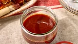

Back to Recipes
Barbeque Sauce Recipe

Description
This is a thick and spicy barbeque chicken recipe that has won several cooking contests. The sauce consists of
molasses, brown sugar, tomato juice and spices all pureed together in a blender. Some may wish to cut the amount
of pepper in half.
Ingredients
- 1 cup ketchup
- 1 tablespoon Worcestershire sauce
- 1 cup molasses
- 2 tablespoons brown sugar
- ¼ cup chopped onion
- 1 tablespoon garlic powder
- 1 teaspoon ground black pepper
- 1 teaspoon cayenne pepper
- 2 tablespoons lemon juice
- 1 (5.5 ounce) can tomato juice
- 2 tablespoons liquid smoke flavoring
Steps
- Gather the ingredients.
- In a blender or food processor, combine the ketchup, Worcestershire sauce, molasses, brown sugar, onion,
garlic powder, ground black pepper, cayenne pepper, lemon juice, tomato juice, and liquid smoke flavoring.
Puree until smooth, and transfer to a saucepan.
- Place saucepan on the stove over medium heat. Bring mixture to a boil, reduce heat to low, and simmer for
about 1 hour, or to desired thickness.
- Serve and enjoy!